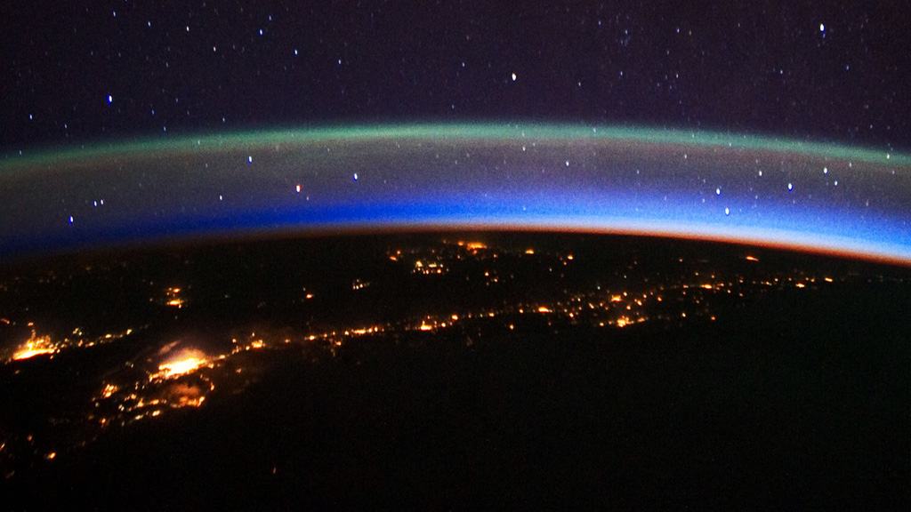

L'ionosphère est l’atmosphère supérieure d’une planète, appelée ainsi en référence à son état de conductibilité électrique qui est caractérisé par une ionisation partielle des gaz. En ce qui concerne l’atmosphère neutre on distingue deux régions, à savoir la thermosphère et l’exosphère. (wikipédia)
L'ionosphère interagit avec les différentes ondes électromagnétiques, permettant de limiter certaines ondes néfastes provenant par exemple du Soleil. Ceci s'applique aux ondes radios: en effet elle perturbe la propagation de ces ondes. Nous utilisons donc cette ionosphère pour faire réfléchir nos ondes de radios courtes portées afin d'établir des communications hautes distances plus sûres. Interférer avec cette ionosphère pourrait donc permettre de couper les communications des pays ennemis. Pour plus d'informations à ce sujet nous vous conseillons de visiter notre rubrique "ARMEMENT"